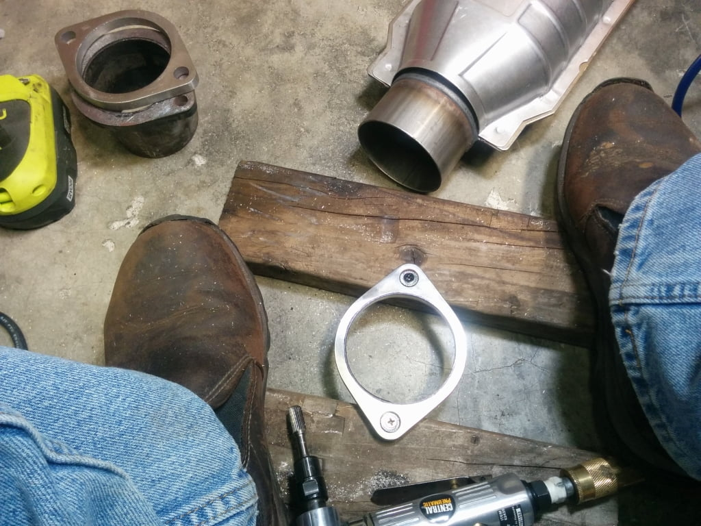

-
I'm trying to finish up the exhaust on SS820 and got a catalytic converter without flanges attached.
I'm having a hell of a time finding a 2bolt flange that will slip over the diameter of the pipe.
The OD measures 3.175.
Is this meant to have a smaller male tube with a flange attached (circled) inserted and lap welded…or
Is the flange to be butt welded to the ends of the bare pipe....or
are there flanges that will fit over the 3.175OD of the cat pipe…or
do i have to enlarge the ID of a a 3in flange to slip over the cat tube.
I'm going to try a local muffler shop for a flange, Summit can't ship until Oct
and i'm too stingy for SS.
Pic: exh1sm.jpg
exh2sm.jpg
Last edited by Z_Karma; 09-09-2016, 01:44 PM.
84 AE/Shiro #683/Shiro #820/84 Turbo -
have you tried checking Vibrants stock? They're well reputed component MFG http://vibrantperformance.com/catalo…86cbb280f91d6a
if i was trying to make a true 3" i'd butt weld it - but if it was *my* exhaust it wouldn't have a cat in the first place
-
I would take it by an exhaust shop - they should have the correct style flanges sitting around. Mark the orientation that matches the upstream and downstream parts of your exhaust and have them weld those on to fit.
That's what I did to match a CM downpipe/test pipe to MSA catback.'86 300ZXT GLL
'78 Datsun 280Z BP
'11 Saab 9-3 Aero XWD -
That's what i got too is a MSA catback and CM downpipe and test pipe and plan to use the test pipe as a reference for clocking the flanges on the cat.
I actually just need the catalytic converter on to pass emissions/inspection then i'll test it "off-road" without it.
I'll be doing the welding. I've gotten confident after a few mig projects that i can do it and not blow through it. But then i do have a new tig machine i've yet to test.
I've checked Vibrant, but all they seem to have is SS, which i'd like to go with more wallet friendly mild steel in a .375" thickness since
i intend to be "off-road" with the test pipe for the majority of "testing".
Local muffler place said "yeah, bring it in so we can take a look at it" so i guess that's what i'll do. Hopefully i can find a flange that works
cause i'd like to get it on this weekend.
Thanks guys.
84 AE/Shiro #683/Shiro #820/84 Turbo -
So it's larger because it's a flared female end meant to slip/clamp over a male 3"OD exhaust. <---local muffler place tech
No bueno if you need it to bolt into a CM kit with flanges and a test pipe.
I ordered some SS Vibrant 3" flanges, should be here this afternoon (Baxter Autoparts is the shiznit).
The 3 muffler shops in town didn't even have 3" flanges cause everybody drives a friggin camry or prius.
84 AE/Shiro #683/Shiro #820/84 Turbo -
That's how the Magnaflow muffler was when i had the axle back tweaked. Never measured it but it slid over the 3"SS piping
You won't be disappointed with the Vibrant stuff.
Now that i think of it, is there a diesel truck performance/modification place near you? they run large pipes -
I chose to embiggen the vibrant flanges…pretty quickly i figured out that it's gonna take awhile. 1 flange = nearly 2 hrs, with breaks to let my compressor cool off. #$%!! stainless.

I thought about cutting the cat pipes down and but welding them, but then the positioning to tack it in place would have been sketchy, even if i managed to make a straight cut.Last edited by Z_Karma; 09-27-2016, 12:25 PM.
84 AE/Shiro #683/Shiro #820/84 Turbo

Copyright © 2006–. All rights reserved. Privacy Policy